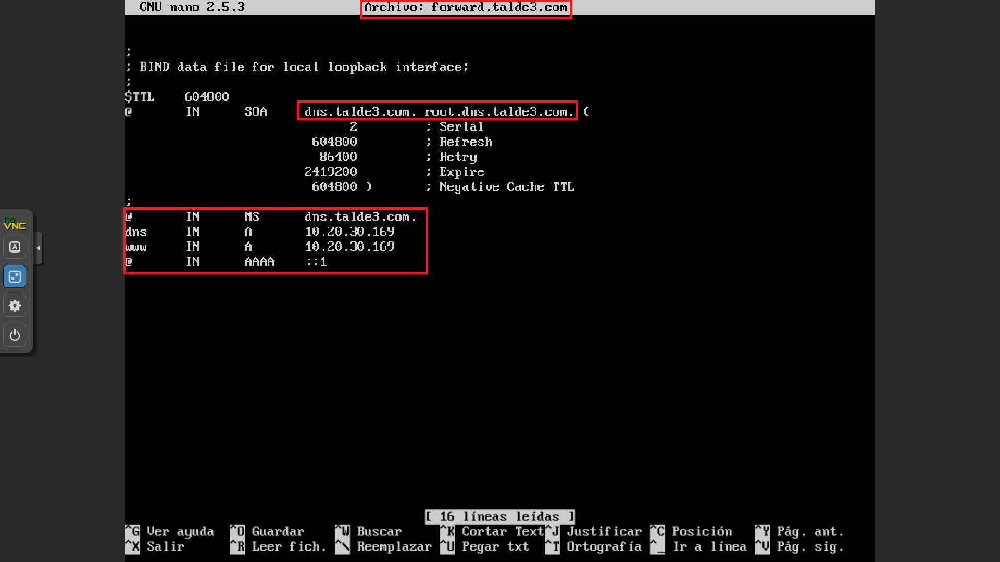

DNS
ZER DA, DNS-A?
DNS-a Domain Name System esan nahi du, domeinuari dagokion zerbitzarian idazteaz gain, benetako helbidea, IP izeneko zenbakizko erlazioa, domeinuaren izenean itzultzeko balioko digu, hau da: IP XXX.XXX.XXX.X izan beharrean wiki.talde4.com erakutsiko digu.
NOLA FUNTZIONATZEN DU?
Erabiltzaileak domeinua idazterakoan (wiki.talde4.com) eta enter botoia sakatzerakoan nabigatzaileak DNS zerbitzariarekin gure domeinuaren IP helbidea zein den begiratuko du eta, topatzerakoan, nabigatzaileak IP XXX.XXX.XXX.X itzuliko du, honekin erabiltzeileak gure webgunea ikusi ahalko du.
NOLA ALDATU DNS-A
Erabiltzaileak Proxmoxa konfiguratzen duen lehen aldian DNS-aren izena gordeko du, aldatu nahi izatekotan, kanpoko programa bat erabiliko dugu: BIND9, programa honen erabilerarekin, DNS zerbitzari bat sare batean jarriko du eta IP helbideak izen batengatik aldatzeko aukera emango digu.
Behin programa instalatuta daukagunean hurrengo pausoak jarraituko ditugu:
- forward fitxeroan hurrengo aldaketak egingo ditugu nahi ditugun datuekin (kontuz! deklarazioaren amaieran “.” bat jarri behar da beti): 
- reverse fitxeroan hurrengo aldaketak egingo ditugu nahi ditugun datuekin (kontuz! deklarazioaren amaieran “.” bat jarri behar da beti):
- named.conf.local fitxeroan hurrengo aldaketak egingo ditugu nahi ditugun datuekin (kontuz! deklarazioaren amaieran “.” bat jarri behar da beti):
- resolv.conf fitxeroan hurrengo aldaketak egingo ditugu nahi ditugun datuekin (kontuz! deklarazioaren amaieran “.” bat jarri behar da beti):
- forward.conf fitxeroan hurrengo aldaketak egingo ditugu nahi ditugun datuekin (kontuz! deklarazioaren amaieran “.” bat jarri behar da beti):
- Azkenekoz, gure ordenagailuko konfigurazioa aldatuko dugu “kontrol panela”-n “Sareak eta Interneta” sakatuko dugu eta han “Sare konexioak”
- Nahi dugun sarea aukeratu ondoren eskumako botoia sakatuko dugu eta agertzen zaizkigun aukeren artean “Propietateak” aukeratuko dugu.
- Azkenekoz, kapturan agerrarazten den aukera horretan bi klik egingo dugu, eta gure DNS-aren helbidea idatziko dugu.